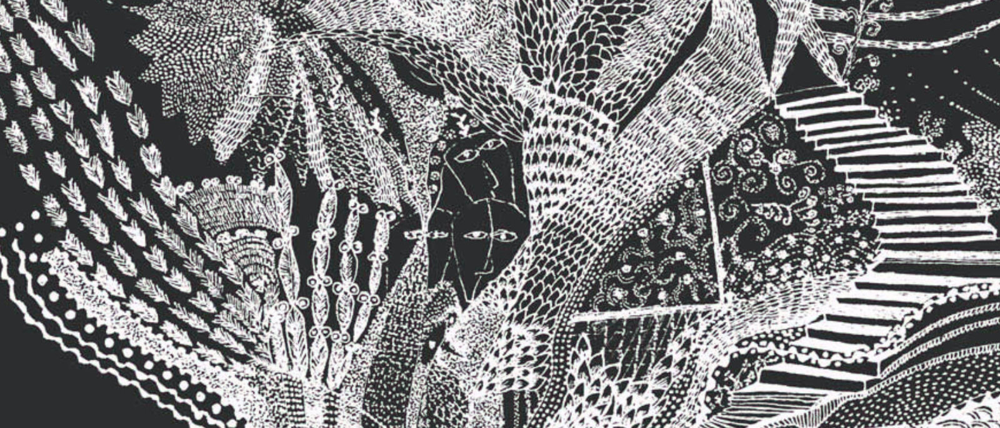
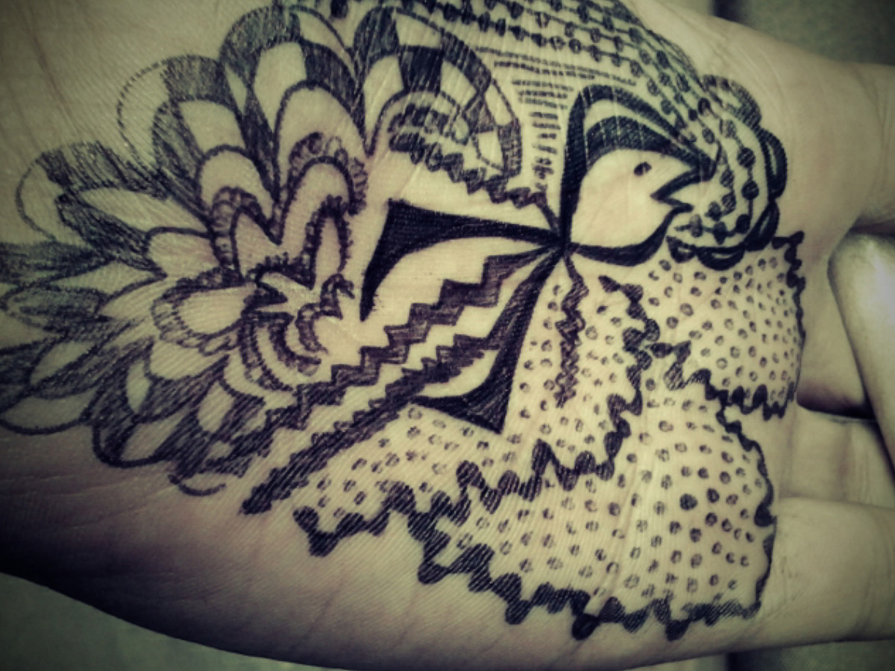
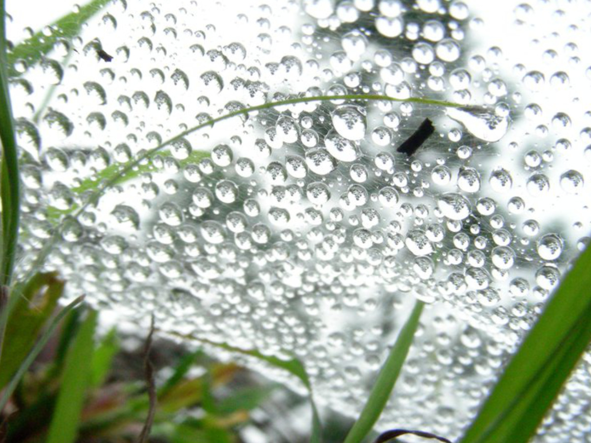

artist · researcher · maker
पहाड़ बोलदे ने। The mountains speak.
Girigari makes things — in glass, fabric, paper, wood, stone, and light. The practice is rooted in the Western Himalayas and shaped by a life spent inside art, from the beginning. The works speak at the intersection of ecological memory, imagination, and ways of seeing.
read more →
mixed media artYears of making, privately — and now, ready to be seen.
1987 — ongoingFifteen years of practice across branding, identity, book covers, and print — concept meeting craft.
2009 — ongoing
illustration · drawingHand-drawn explorations — birds, mountains, fragments, and the lines between things.
1999 — ongoing
photographyDocumenting landscapes, waste, people, and the quiet evidence of how we live in mountain regions.
2005 — ongoingएक बिंदु से शुरू होता है।
It begins with a single dot.